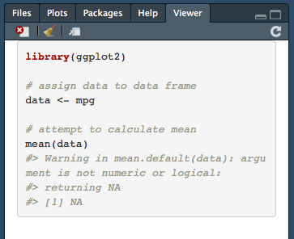

5.2 How to Seek Help
If all else fails and the strategies for Helping Yourself have not yielded a solution, it is time to ask for help! Before you head to office hours or Slack, you will want to construct a reproducible example.
5.2.1 What is your question?
Start with a basic step - narrow down what your question is. Neither “I am getting an error” or “This isn’t working” are effective questions. What exactly is causing the error? What context does it appear in? To borrow from the examples below, a good question might be:
I am trying to calculate descriptive statistics for an entire data frame using the
mean()function but am getting and error. What might be the cause of the error?
I am trying to create a thematic choropleth map in ArcGIS, but when I try and select my variable from the dropdown menu in the symbology tab under layer properties, the menu is empty. Why are all of the variables missing?
I am trying to make my text bold in LaTeX, but the text is not rendering with bold font. I am also getting an error that says “Undefined control sequence.” What is missing from my document to create bold font?
Be specific about what your issue is, and then provide a reproducible example that illustrates what you are asking about.
5.2.2 What is a reproducible example?
A reproducible example, or reprex, is a term we’ll borrow from the R ecosystem. It was coined by Roman François and has been enshrined in the reprex package, which I’ll describe below. The goal for a reprex is to strip down the process you have used to the minimal number of steps needed to replicate the error. This means using the fewest steps and data sources possible. Cut out anything that does not directly contribute to causing the error when making your reprex.
I have often found that the process of making a reprex actually helps isolate the cause of the problem. For instance, it may become clear that a specific step is causing an issue. Even if you are not sure how to fix the problem, having narrowed it down can be immensely helpful. If you can use built-in data in R to create the reprex, or at least example data from the course, that may also help you identify whether the issue is with the process itself or something that is idiosyncratic to the data you are using. Using built-in data from R should be the default for any reprex you create, unless assignment data are the cause of your issue.
5.2.3 Creating a reprex
Creating reproducible examples will differ slightly based on what you are trying to get help on.
5.2.3.1 R
To create a reprex in R, you will need to install the reprex package. It is part of the tidyverse but it is not installed when the tidyverse package is installed, so you will need to install it separately:
install.packages("reprex")Once you have it loaded (use the library() function), create a minimal example of the necessary functions that get to you to the error you are confronting. Make sure to include the library() functions for all packages your example depends on (except for reprex). Write the example in a .R script file (File > New File > R Script). For example, one might be struggling with calculating the mean of each variable in a data frame:
library(ggplot2)
# assign data to data frame
data <- mpg
# attempt to calculate mean
mean(data)The last of the three functions above will return this error in your R session:
> mean(data)
[1] NA
Warning message:
In mean.default(data) : argument is not numeric or logical: returning NAWith the three functions written in a .R script, highligh all seven lines of code (the three functions, both comments, and both whitespace lines) and copy them to your clipboard (Edit > Copy). Then call the reprex() function. Markdown formatted text that weaves both the functions and their output together will appear in the viewer tab:

It will also be available on your clipboard so that you can copy and paste it into Slack or another venue that accepts Markdown syntax (like GitHub). If your reprex contains image output, such as a plot or a map, it will be automatically uploaded to imgur and a link will be embedded in your Markdown syntax. For example, say we had a question about the following code:
library(ggplot2)
# assign data to data frame
data <- mpg
# plot highway mpg
ggplot(data = data, mapping = aes(x = hwy)) +
geom_histogram()Once we copy the above code and render it using reprex(), it will return the following output:
library(ggplot2)
# assign data to data frame
data <- mpg
# plot highway mpg
ggplot(data = data, mapping = aes(x = hwy)) +
geom_histogram()
#> `stat_bin()` using `bins = 30`. Pick better value with `binwidth`.
The  syntax will allow an image of your plot to appear below the code.
The reprex package website has some great resources, including a basic overview, some reprex do’s and don’ts, and a detailed article introducing the package’s functionality.
5.2.3.2 ArcGIS
Creating a reprex in ArcGIS is not as straightforward since there is not a dedicated tool for doing so like there is in R. Reprex creation is complicated by the fact that many steps you will be taking are manual. Nevertheless, it is possible to create a repex. Follow these steps:
- In a new map document, load the minimum number of shapefiles needed to illustrate the issue you are having. Note where the shapefiles are available (in the course data release?) and what their names are.
- Note what the coordinate system of the data frame is set to.
- Provide notes for each step that gets you to your question or error.
- Take a screenshot of the error or the window you have a question about.
For example, a reprex of a question in ArcGIS could look like the following:
1. I have a single map shapefile open in a new map document. The shapefile is the St. Louis census tracts shapefile from the example data in the course data release.
2. The coordinate system is Missouri State Plane East (Feet)
3. When I right click on the shapefile, I click on Properties and then the Symbology tab
4. Attached is a screenshot of what the symbology tab looks like for these data.5.2.3.3 LaTeX
Like ArcGIS, there is no specific tool for creating a reprex using LaTeX. The LaTeX community does have, however, a long tradition of creating “minimal working examples”, which are similar to reprexs. Follow these general steps:
- Create a new LaTeX project. Use the
\documentclass{article}if you are using something different. - Only include packages in the preamble that are directly related to the question or issue you have.
- Skip creating a title block
- Provide just enough body text in your LaTeX document to illustrate the issue.
A repex for LaTeX might look something like this:
\documentclass{article}
\begin{document}
\textbold{Foo bar.} Spam and eggs.
\end{document}Also provide a written description of what is wrong (such as “the text is not being rendered as bold”) and, if helpful, a screenshot of your output. There is a great overview on Stack Exchange of how to write a reprex for LaTeX. If you are using ShareLaTeX, also take a look at the error log and take a screenshot of the relevant error message. If you are using another LaTeX application, provide the text of your error message instead.
5.2.3.4 Other Tools
For other tools we learn, such as Markdown and GitHub, you want to follow the spirit of the reprex file. Try to recreate your issue outside of the context of your assignment (this may not be possible for GitHub), and provide a detailed walk-through of the steps that you took to get where you are. For Markdown syntax, provide an example of the syntax you are using that recreates the issue or question. For GitHub, provide a screenshot of the relevant error message.
5.2.4 “I don’t think I can make a reprex!”
I am 99% sure that you can! In nearly every situation I have seen students in, creating a reprex is possible. Even if the error is idiosyncratic to your computer or your data, you can absolutely clarify the context within which the error appears and minimize the amount of data, code, and other information in your R code or your map document. For the less than 1% of scenarios where a reprex is not possible, the process of writing a question, clarifying the context and steps you took to get there, and producing an example of the error will still make it easier for me to help you.
5.2.5 “Isn’t this a lot of work?”
Well, yes, it does require some extra effort. This effort is almost always worth it, however. In some cases, the time it takes you to produce the repex leads you to the answer on your own, which is part of the problem solving process that this class is designed to foster. Even when this does not happen, making reprex informed inquries is a technique that you will be able to take with you at the end of the semester. Even if you are not working in a technical setting, being able to structure clear, concise questions about a process is a valuable skill!
Finally, creating a reprex saves you time in the long run. When I get vague questions, it often takes some experimenting on my part to reproduce the error. If you send me a question with a reproducible error, you cut out that experimentation time on my end and I can get right to answering your question. Likewise, students often come to office hours without an example of their issue ready to go and hope that I can conjure in my mind the scenario they are describing. Despite my best efforts, I am usually unable to do so and ask students to reproduce the error during office hours. If you come to office hours with a reprex, we can get to answering your question right away!